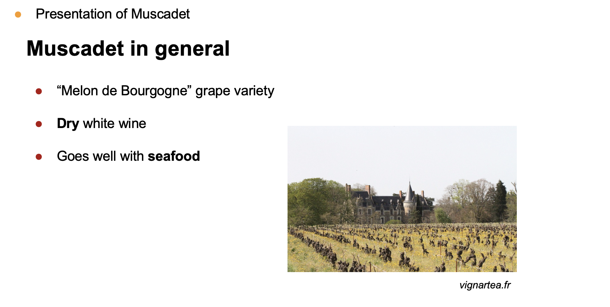
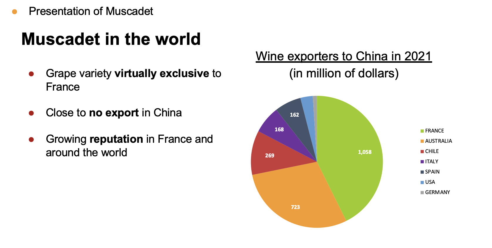
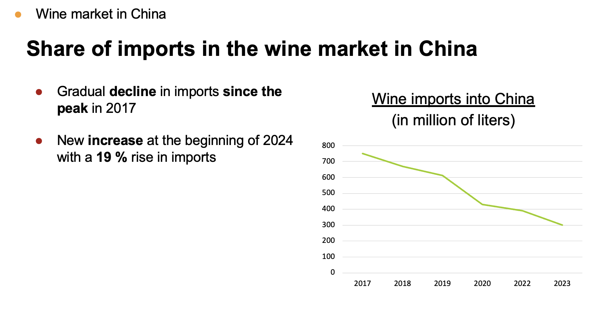
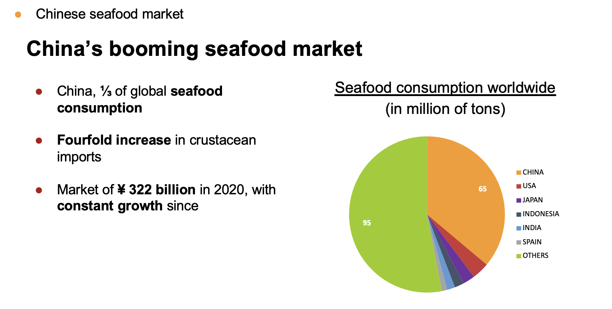
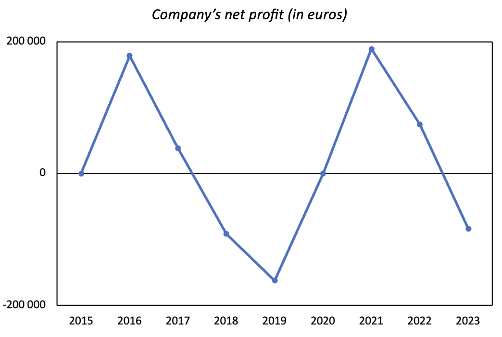
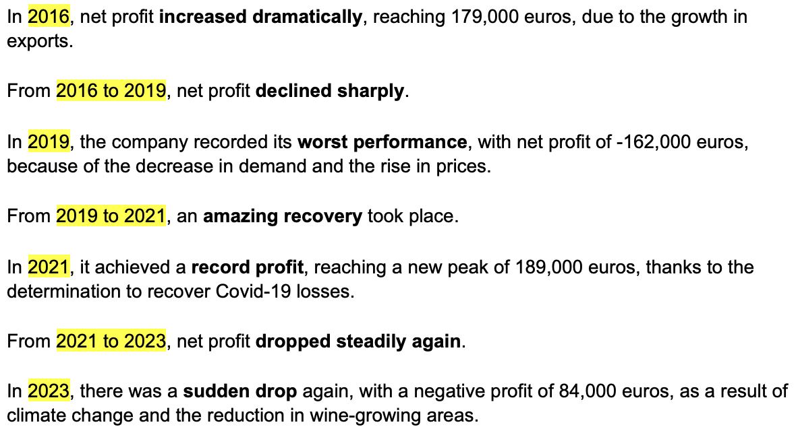

Cette diapositive présente le produit Muscadet en mettant en avant son cépage principal (Melon de Bourgogne) et ses caractéristiques essentielles (vin blanc sec, accord mets-vins avec les fruits de mer).
J’ai sélectionné ces informations pour adapter ma présentation au public visé, en contextualisant le produit dans un cadre marketing et culturel.
Cette preuve démontre que j’ai acquis la compétence AC 13.02, car j’ai su contextualiser les données et choisir les éléments les plus significatifs pour valoriser le produit à l’oral.
Cette diapositive présente le positionnement du Muscadet à l’international, en soulignant la particularité de son cépage, l’absence d’exportation significative vers la Chine, et sa réputation croissante en France. Elle est accompagnée d’un graphique en secteurs illustrant les principaux pays exportateurs de vin vers la Chine en 2021.
J’ai sélectionné ces données et conçu la diapositive de façon à contextualiser le produit dans un environnement économique international et à mettre en évidence les résultats clés : la faible présence du Muscadet en Chine et les volumes d’exportation par pays.
Cette preuve démontre que j’ai acquis la compétence AC 13.02, car j’ai su relier les données économiques du marché chinois. Elle montre également que j’ai acquis la compétence AC 13.03, car j’ai sélectionné et valorisé les indicateurs les plus pertinents pour appuyer l’analyse du positionnement à l’international.
Cette diapositive montre l’évolution des importations de vin en Chine entre 2017 et 2023, à travers un graphique en ligne clair et lisible. J’ai accompagné ce graphique avec un texte décrivant la baisse progressive des importations depuis le pic atteint en 2017, ainsi qu’une prévision d’augmentation de 19 % qui était prévue début 2024.
J’ai structuré les informations pour mettre en contexte les données économiques et faciliter leur interprétation par le public visé.
Cette preuve démontre que j’ai acquis la compétence AC 13.02, car j’ai su relier les données économiques à un contexte temporel et sectoriel (marché du vin en Chine). Elle montre également que j’ai acquis la compétence AC 13.03, car j’ai sélectionné et mis en avant des résultats clés à l’aide d’un graphique.
Cette diapositive décrit le marché chinois des produits de la mer, en mettant en évidence sa part importante de la consommation mondiale (1/3) et sa croissance continue (322 milliards de ¥ en 2020). J’ai également inséré un graphique en secteurs afin de mettre en avant la répartition de la consommation mondiale de fruits de mer.
J’ai conçu cette présentation pour contextualiser le marché chinois et souligner les tendances clés (croissance, forte demande), tout en fournissant des données comparatives avec d’autres pays.
Cette preuve démontre que j’ai acquis la compétence AC 13.02, car j’ai su relier les données économiques du marché chinois. Elle montre également que j’ai acquis la compétence AC 13.03, car j’ai sélectionné et valorisé des indicateurs pertinents pour appuyer mes analyses.
Ce graphique présente l’évolution du bénéfice net de l’entreprise que j'ai choisie de représenter, entre 2015 et 2023. Il illustre les variations importantes (pics et baisses), permettant de visualiser rapidement les périodes de profit et de perte.
J’ai conçu ce graphique pour mettre en évidence les tendances clés et faciliter la lecture des données économiques, en sélectionnant une représentation claire et pertinente.
Cette preuve démontre que j’ai acquis la compétence AC 13.03, car j’ai su sélectionner un indicateur pertinent (le bénéfice net) et le représenter graphiquement pour aider à la compréhension.
Ce texte complète le graphique précédent en présentant une analyse chronologique des bénéfices nets de l’entreprise de 2015 à 2023. J’y détaille les principales évolutions en utilisant des termes précis comme increased dramatically ou record profit pour qualifier les tendances observées.
Cette preuve montre que j’ai su contextualiser les données économiques pour donner du sens aux chiffres présentés et les relier à des événements concrets comme le Covid-19 ou le changement climatique.
Cette preuve démontre que j’ai acquis la compétence AC 13.02, car j’ai su expliquer les évolutions des données en fonction des événements économiques. Elle montre également que j’ai acquis la compétence AC 13.03, car j’ai mis en évidence les résultats clés grâce à une explication détaillée et progressive des variations du bénéfice net. Enfin, elle valide la compétence AC 13.06, car j’ai utilisé une expression précise en anglais pour décrire les résultats de manière professionnelle.
Excel
Dans ces SAÉ combinées, je me suis mis dans la posture d’un chargé d’étude économique. Mon objectif était de rechercher, analyser et valoriser des données issues de l’environnement socio-économique, tout en étant capable de présenter les résultats obtenus en anglais de manière claire et professionnelle.
J’ai mobilisé les ressources anglais de spécialité (R1.07), communication professionnelle (R1.08) et découverte des données de l’environnement entrepreneurial et économique (R1.09) pour rechercher des informations pertinentes, structurer mes analyses et présenter mes résultats de manière claire en anglais.
J’ai identifié des sources ouvertes (comme l’INSEE ou data.gouv.fr), extrait des indicateurs économiques clés d’un territoire, puis construit une synthèse des résultats à l'aide de graphiques. J’ai ensuite rédigé et présenté ces informations en anglais, en utilisant le vocabulaire professionnel adapté.
J’ai appris à contextualiser les données dans un cadre socio-économique réel, à dégager les indicateurs les plus pertinents, à expliquer ma démarche d’analyse et à restituer mes résultats de manière claire, structurée et bilingue.
Compétences développées :
— AC 13.02 |Identifier l’importance de contextualiser ses données
J’ai su présenter le domaine d'activité de l'entreprise dans un contexte économique, pour donner du sens aux chiffres présentés et faciliter leur interprétation.
— AC 13.03 |Mesurer l’importance de mettre en évidence des résultats clés par l’utilisation d’indicateurs pertinents
J’ai mis en évidence les résultats clés à travers des termes précis et des graphiques pour permettre une lecture rapide des tendances.
— AC 13.06 |Mesurer l’importance d’une expression précise et nuancée dans la communication en français et dans une langue étrangère des résultats
J’ai utilisé une expression professionnelle, en anglais, pour expliquer les évolutions des données économiques.